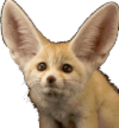

What is Vulpedia?
Vulpedia is a codex for all things fox related. This website attempts to display some of the most fascinating information about foxes, whether it was to show their outer appearance or their habitats. On Vulpedia you can also find a gallery to appreciate foxes and their diverse colors and sizes. To wrap up your experience on Vulpedia, you can test your knowledge about foxes on the quiz page.
What are Vulpes?
Vulpes is simply the scientific name for the word "fox". Vulpes is a genus of the sub-family Caninae. The members of this genus are referred to as "true foxes". There are over 37 types of foxes. Only 12 of those species are considered true foxes of the Vulpes genus. Vulpes live in many regions and different climates such as the Arctic Circle where the Arctic fox resides and the North African Sahara desert where the Fennec fox lives.